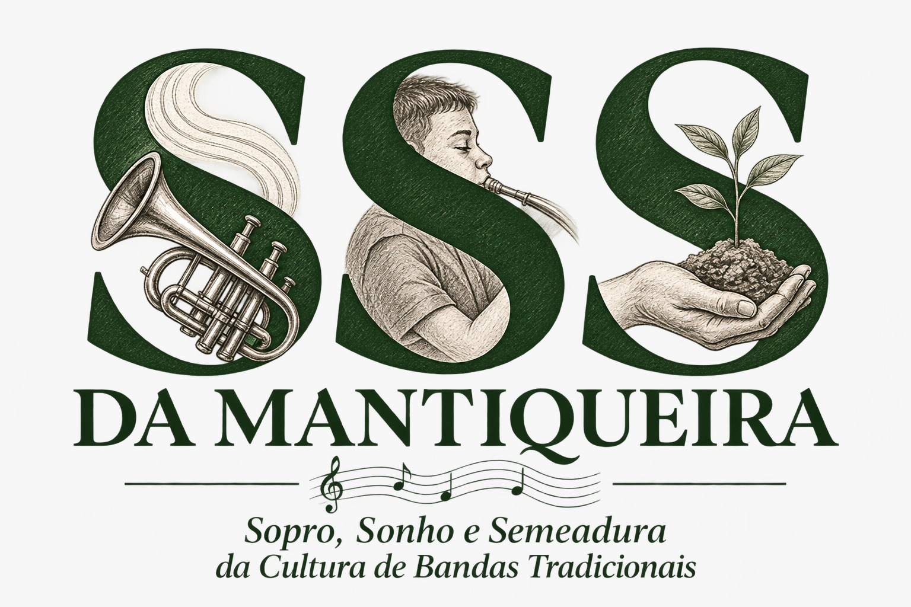

SSS DA MANTIQUEIRA
Sopro, Sonho e Semeadura da Cultura de Bandas Tradicionais
Projeto de formação e fortalecimento da cultura de bandas tradicionais na Serra da Mnatiqueira, com atividades de musicalização, formação instrumental, oficinas e ações culturais.
Fomento: Política Nacional Aldir Blanc - PNAB / Secretaria de Estado de Cultura e Turismo de Minas Gerais.
Saiba mais